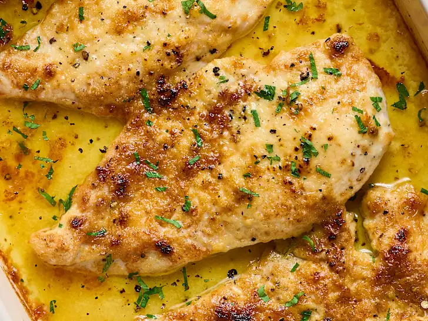

Melt yo Mouf Chick'n

Home
Description
A relatively quick chicken bake recipe for boneless/skinless breasts. Juicy and flavorful, mayonnaise and parmesan cheese are highlighted for a unique but scrumptious combination
Ingrediants
- 1lb Chicken Breasts, diced
- 3/4 cup mayo/greek yogurt
- 1 cup parmesan cheese, shredded
- 1/2 tsp seasoned salt
- 1/2 tsp ground black pepper
- 4 garlic cloves, minced
- 1/2 tsp red pepper flakes
- 1/2 cup bread crumbs
Steps
- Grease 9 X 13 baking pan and place diced chicken on the bottom
- In small bowl, combine mayo, parmesan chees, seasoned salt, pepper, garlic, and red pepper flakes
- Spread mixture evenly on top of chicken
- Sprinkle bread crumbs evenly on top of chicken
- Place pan in preheated oven, 375 degrees, bake for approx. 30-35 minutes, or until chkn is cooked through